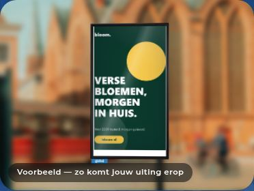
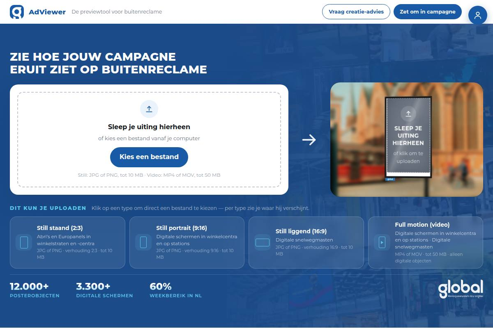
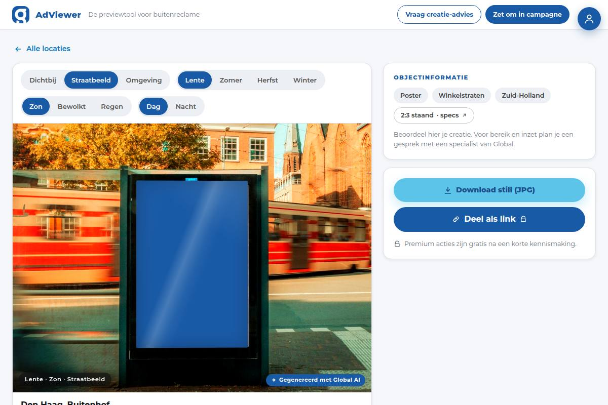
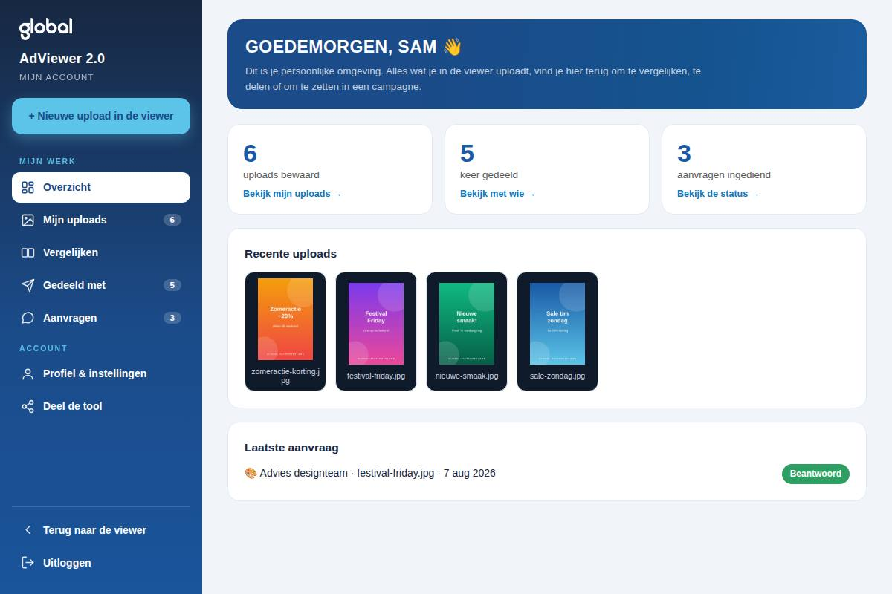
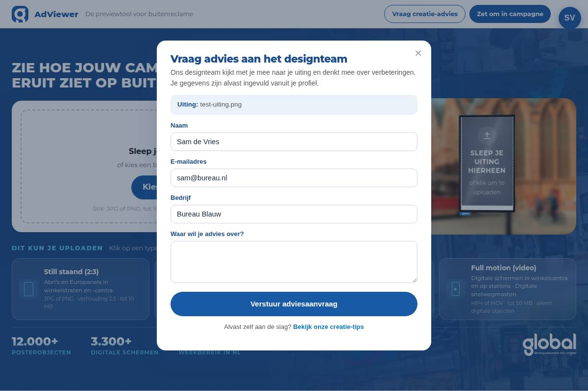

Upload een uiting en zie meteen hoe die schittert op de reclameobjecten van Global. Gratis, zonder installatie.
Start de toolZo werkt het ↓
Vier stappen, nog geen minuut — en je ziet er meteen bij hoe elke stap er in de tool uitziet.
Sleep je beeld in de viewer of kies een bestand. Je creatie verschijnt direct op een reclameobject van Global — realistisch, met omgeving en al.
Wissel van afstand, seizoen en weer, en download het resultaat. Zo weet je meteen of je uiting werkt op formaat en leesafstand.
Bewaar je uploads, vergelijk twee uitingen naast elkaar en deel een campagnelink met je team.
Vraag met één klik creatie-advies aan ons designteam — of zet je preview om in een echte campagne via sales.




Alles wat je na die vier stappen in handen hebt.
Upload je eerste uiting en zie ’m binnen een minuut op straat staan.
Start de tool